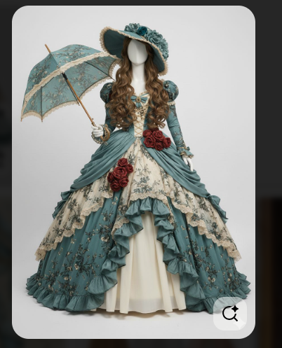

Üdvözlünk a stúdióban!
Klasszikus, kézzel rajzolt animációk nosztalgikus hangulatban.

Aktuális projekt
Elodie és az Elveszett Hercegnők
Grimm-adaptáció fejlesztés alatt.
Várható bemutató: 2028–2029
Független 2D animációs műhely | Alkotó: Király Zsolt
Klasszikus, kézzel rajzolt animációk nosztalgikus hangulatban.

Elodie és az Elveszett Hercegnők
Grimm-adaptáció fejlesztés alatt.
Várható bemutató: 2028–2029